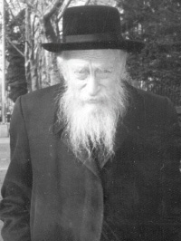

The Modesty and Bittul That Hid Everything

The Rebbe Rayatz often repeated the line, “You say that you learned Torah; what did Torah teach you?” It was evident what Torah taught Rabbi Yaakov Friedman. Whoever looked at him as he davened saw the t’filla of an elevated Chassid. He davened aloud and with an outpouring of his soul. He was completely immersed in the words of the davening as in the saying of the Baal Shem Tov on the words, “bo el ha’teiva” – enter the teiva, enter the words of t’filla. Every word of his davening was measured, illuminated and polished, as though he was counting precious stones. Just by watching him daven one would absorb Yiras Shamayim.
If that was the case on weekdays and during a pashute (ordinary) Mincha, then it was all the more so the case on Shabbos, Yom Tov and the Yomim Nora’im. Every year, before Yom Kippur, he would ask his family members and even his young grandchildren, “Daven for me that I be able to daven.”
All his life he made great efforts to carry out the (numerical value of the) acronym of the word “tzaddik” by saying every day 90 (Tzaddik) amens, 4 (Dalet) k’dushas, 10 (Yud) kadaishim, and 100 (Kuf) brachos.
He would get up before dawn and after immersing in a mikva, which he was very particular about, he would make the rounds of shuls to collect tz’daka. For many years he davened in a vasikin minyan in Boro Park; he was one of the founders of that minyan.
IS HE STILL SAYING T’HILLIM?
T’hillim is one of the things about which he was very particular. He always tried to say T’hillim, aside from the set times that he dedicated for its recital. For example, every night he had the practice of getting up after midnight and saying T’hillim for a long time. He would say it with an unusual outpouring of the soul.
Once, at a farbrengen, the Rebbe looked for Rabbi Yaakov among the crowds of people in order to tell him to say l’chaim. He looked right and left and then loudly asked, “Rabbi Yaakov HaLevi Friedman is here? Is he still saying T’hillim?”
A G-D-FEARING MAN
Rabbi Friedman earned the title, “Ish Yerei Elokim” (a G-d fearing man) in the fullest sense of the term. What greater proof is there than the reason that he drew close to the world of Chabad Chassidus was only because he saw greater Yiras Shamayim there, more than in all other groups with which he was familiar. As he once said to his son-in-law, Rabbi Sholom Horowitz, “I saw that Lubavitch is the most frum.”
Rabbi Yaakov was born in Kovno, Lithuania to a Litvishe family and in his youth he learned in the famous Yeshivas Slabodka. Moving from one world to another requires a valid reason. Indeed, Rabbi Yaakov met the mashpia, Rabbi Yehoshua Isaac Baruch (may Hashem avenge his blood), as well as Reb Itche der masmid (may Hashem avenge his blood) who were sent as the Rebbe Rayatz’s shadar to Kovno. He saw their tremendous Yiras Shamayim, got a taste of Chabad Chassidus, and began to grow close to the Rebbe Rayatz.
“What drew me in particular,” said Rabbi Yaakov, “was the netilas yadayim of Reb Itche der masmid,” and he would go on to describe it. It necessitated several towels and took a long time.
Practices such as these became his daily practice. Rabbi Yaakov “related” to Yiras Shamayim. He took a great interest in every expression of Yiras Shamayim.
A CHASSID IS ONE WHO FASTS
As a Chassid of an earlier era (before the change in our generation following what the Rebbe said on this matter) he would fast a lot. He fasted entire days without anyone knowing. Fasting the customary Monday-Thursday-Monday following Pesach, Shavuos and Sukkos, was a matter of course.
When a family member took note of this, Rabbi Yaakov remarked, “It’s just fasting a little,” and went on to another topic as though nothing had happened. This practice of his fits with what the Rebbe Rayatz said, “A Chassid is one who fasts.”
His Yiras Shamayim was ingrained in his soul. This was apparent in seemingly little things. For example, he always enjoyed listening to a little child say a bracha nicely or even hearing about some expression of Yiras Shamayim on the part of his little grandchildren. You could see that this gave him chayus and simcha.
Not surprisingly then, he had the practice of looking in the Siddur throughout the entire Chazaras HaShatz, which is the Rebbe’s practice.
WE MUST DO T’SHUVA
“All his days in t’shuva” (Gemara Shabbos 153a). This statement of Chazal was imprinted on his soul. He would constantly repeat, while sighing heavily, “We must do t’shuva.” His family couldn’t take it, for if he had to do t’shuva, what should we say? In his final years he sighed over this a lot and he would search and ask, whether in s’farim or of friends, with the simplicity of a child: How is t’shuva done?
Within the year that he passed away, he was visited by his mechutan, Rabbi Pinchas Leibush Hertzel. As Rabbi Hertzel was about to leave, Rabbi Friedman took him aside and with the utmost seriousness asked him, “How do we do t’shuva?” His mechutan, who didn’t know how to respond said, “Nu, Moshiach will come to bring the righteous to t’shuva.”
If we needed additional proof of his great Yiras Shamayim, this seems to be it: A holy Yid who was distraught over his spiritual state and wanted to do t’shuva all his days.
MESIRUS NEFESH FOR ANOTHER
Chazal say that a Chassid burns his nails, signifying his caring about others more than himself. Rabbi Yaakov constantly forwent his personal good for the sake of others. He did this not only in good times but even in times of great deprivation when tremendous mesirus nefesh was needed to maintain this level.
His nephew Rabbi Dovid Schweitzer relates:
“I heard from the Klausenberger Rebbe zt”l, that he was in Auschwitz with Rabbi Yaakov and how he was outstanding in his conduct at that terrible time. He said that the Nazis distributed small rations of bread to the inmates for which they had to stand on a long line and wait. Sometimes they would announce that there was no more bread. This meant that the lives of a number of Jews were in danger since they had not eaten anything following a day of backbreaking labor. This is why, as soon as someone received his piece of bread, he ate it immediately out of fear and starvation. But not Rabbi Yaakov. He took his meager piece of bread and walked away. They asked him: Why don’t you eat it? Why are you waiting? He said, ‘Efshar vet a Yid nit bakumen’ (maybe a Jew won’t get any).”
This entailed danger to his own life but his focus was on another Jew who might need the bread more than he did.
A CHASSID CREATES AN ATMOSPHERE
The Rebbe Rashab said, “A Chassid creates an atmosphere.” Wherever Rabbi Yaakov went, you would see his impact on that place. This was in addition to those things he worked to disseminate everywhere. Here is a sampling:
-Wherever he could he would encourage people in their avodas Hashem.
-At every family gathering, whether on Shabbos, Yom Tov, or a Melaveh Malka, he would learn Tanya with all the participants.
-At every simcha where he was asked to speak, he would raise the issue of the three pillars of Torah, T’filla, and Tz’daka, and made sure these things were actually done.
-He published a number of inspirational booklets on various topics with which he was regularly involved. One of them was on the topic of 100 brachos a day. He constantly brought up this inyan. When the Rebbe spoke about it in 5751, he worked hard to publish an entire booklet on this subject. He published a calendar schedule for the T’hillim that is said in the month of Elul according to the takana of the Baal Shem Tov. The Rebbe reviewed this calendar for him.
-He always urged his grandsons to learn Mishnayos, and especially Tanya, by heart.
His character fit what the Rebbe Rayatz said regarding a Chassid (see the sicha of 9 Nissan 5700), “I conjured up a multifaceted image in response to the question of what is a Chassid: A Chassid is … a one who davens, a person with middos tovos, one who fasts, one who practices silence.”
A MAN WHO SUFFERED
Unfortunately, our generation does not lack people who suffered. However, accepting suffering with love is no small matter, especially when speaking of a life such as Rabbi Yaakov lived. He went through the horrors of the Holocaust and found it hard to speak about this period of his life. He lost his first wife and children and constantly saw death all around him. All his life he suffered greatly, physically and emotionally, due to what he experienced during the war.
Those years merely served to strengthen him and fanned the fire of faith within him. Rabbi Yaakov wondered sorrowfully, “Why did I not have the tremendous z’chus that my family had, to be moser nefesh al Kiddush Hashem?”
SAVING JEWISH CHILDREN
Upon Rabbi Yaakov Friedman’s arrival in the Fernwald DP camp in 1945, he established a school for the children. The new school grew until there were dozens of students. There were 17 teachers including his friend, Rabbi Eliyahu Chaim Roitblatt a”h. Rabbi Friedman would go from house to house to collect donations for the school. He corresponded with the Rebbe Rayatz and received instructions from him about how to run the school.
When he arrived in the United States, he heard from his friend Rabbi Yona Eidelkopf a”h about an opportunity to continue to provide chinuch for children in Eretz Yisroel, and together they starting an organization called Chadrei Torah Ohr (a network providing after-school religious instruction). At first, it was called Chadrei Torah but the Rebbe added the word “Ohr.” The Rebbe always inquired about how it was doing and how it was growing. He even spoke about it at some farbrengens.
Rabbi Yaakov did not only support chinuch with the money he raised but he himself was a teacher for many years in Yeshivas Darkei Noam and Klausenberg in Brooklyn.
DEVOTED TO HELPING THOSE IN NEED
During one of the most difficult experiences he had in the Holocaust, Rabbi Friedman resolved, “If Hashem saves me, I will always be involved in tz’daka and chesed.” Indeed, he was an Ish Tz’daka V’Chesed with all his might, not only in the practical sense, which occupied most of his day, but emotionally too. He was absolutely devoted to helping others. At all hours, even minutes before candle lighting on Erev Shabbos, you could see people knocking at his door.
His son-in-law Rabbi Sholom relates:
“Once, while distributing money to the needy, many people showed up and there wasn’t time to listen to each one, so I decided to give the money out quickly without listening to their stories. My father-in-law said, ‘There are two aspects to tz’daka, first you have to listen to what the poor man has to say and then you give him money.’”
Rabbi Yaakov felt other people’s pain. It was not surprising that on practically every occasion (even an unexpected visit by his grandchildren) he would sing the niggun, “Hoshia es Amecha …” (Save Your people and bless Your inheritance, tend them and exalt them forever). This niggun was such a part of him that on the Shloshim after his passing, everyone present at his gravesite spontaneously began singing it.
GIVING TO WHOEVER PUT OUT HIS HAND
The rule, “whoever puts out his hand is given [tz’daka]” was an inviolate principle of his. Whenever people knocked on his door and asked for help, he gave them money. If anyone tried telling him that certain individuals were not in need, he didn’t want to hear it. He would firmly say, “We can’t say that [about a Jew].”
Rabbi Dovid Schweitzer related:
“I remember an incident from sixty years ago, back in Germany, when someone came and asked for a big loan for a few days, leaving a valuable deposit, a gold watch. Someone present quietly commented that it was probably a stolen watch. Rabbi Yaakov immediately shushed him and gave the loan. Not long afterward, the police came looking for the stolen object.”
Since chesed was what he was all about, he did not wait for people to come to him, but he went looking to see how he could help people. One day, he was in shul when he heard two men talking. One said to the other: X is extremely poor. Rabbi Yaakov heard that short sentence and that was enough for him. He did not know who X was and being modest, he did not ask the men who they were talking about. He left the shul and went home and opened a phone book and began looking for that name. He found it. He called the person up and said, “If it’s not difficult for you, please come to 1020 56th Street.”
The man came and Rabbi Yaakov gave him a sealed envelope and wished him well. The man was stunned when he opened the envelope and found a check for $500.
This story was related at the Shiva by the man himself, and there are many more such stories.
BRINGING MERIT TO JEWISH PEOPLE
We all know that fundraising is difficult. Giving away money is one thing; raising money from others is another thing entirely. To Rabbi Yaakov, the avoda of enabling others to give tz’daka was as important as giving money to the needy. He made the effort to provide the z’chus of giving, even if it was only a dollar or less.
His son-in-law, Rabbi Yehuda Wolf, once asked him: Why do you schlep around to little shuls that barely have a minyan. It would be better for you to go to a big shul where you will collect more money. Rabbi Yaakov answered: What about providing an opportunity for tz’daka for those other Jews?
His son-in-law, Rabbi Yeshaya Hertzel, related another incident:
“Rabbi Yaakov went to a wedding and wanted to collect money. The owner of the hall asked him: How much will you collect? I am willing to give $300 (a large amount in those days), but do me a favor and don’t collect here.
“Rabbi Yaakov, to whom the mitzva of enabling others to do mitzvos was so dear, asked him: How can you take such a great responsibility of preventing Jews from doing a mitzva?”
This mesirus nefesh is what gave him his reputation in all religious communities in New York. Everyone, no matter what group they affiliated with, allowed him into their shuls where they treated him with utmost respect. They learned that it pays to give Rabbi Yankel Friedman; it was guaranteed tz’daka. Many people pursued him to give him money and receive his blessing. All knew that he was a genuine gabbai tz’daka.
WITH THE KLAUSENBERGER REBBE
Rabbi Yaakov was close with Rabbi Moshe Shuster a”h. He was one of the people who pushed him to get more involved in Lubavitch. The deep connection between them was mutual. Reb Moshe called him “my dear brother” in his letters and Rabbi Yaakov mentioned him for a bracha to the Rebbe whenever he was in need of one.
The Klausenberger Rebbe was another person who was grateful to him all his life for the years they spent together during the war. Rabbi Yaakov had ensured that they would not have to work on Shabbos. The Klausenberger Rebbe said, “The cursed Nazis stripped the Jews of their clothes and of everything in their possession (after which they were given the camp uniform that looked like pajamas). In my barrack was a wonderful Jew who, till today, I can’t understand how, had a small Mishnayos. He did me a great favor by occasionally lending it to me.”
One day, years later, Rabbi Yaakov went to visit the Klausenberger Rebbe. The gabbai told the Rebbe that a man by the name of Yaakov Friedman wanted to see him. The Rebbe asked what he looked like and when he was described, the Rebbe trembled and said to let him in at once.
When Rabbi Friedman entered the room, he locked the door and they spent two hours together, to the bewilderment of all the Chassidim. When Rabbi Friedman left, the Klausenberger Rebbe said to his Chassidim, “He is one of the Lamed-Vav (36) tzaddikim, and that is what Lubavitcher Chassidim used to look like.”
His son-in-law Rabbi Sholom relates, “When I was a chassan, my father-in-law took me to see the Klausenberger Rebbe and I saw with my own eyes how he rose from his chair in his honor. The Klausenberger Rebbe was also one of the people who influenced Rabbi Yaakov to be a Lubavitcher Chassid.”
One of his friends, who was also his mentor, was the Chassid, Rabbi Eliyahu Chaim Roitblatt. Rabbi Moshe Weber of Yerushalayim and Rabbi Michoel Teitelbaum were also friends of his.
HIS VAST KNOWLEDGE OF TORAH
Rabbi Yaakov cleverly concealed his greatness, since he was truly humble and modest, ah bitul’dike Yid. One of the things that is hard to discern is someone’s greatness in Torah, for when it comes to chesed, as much as a person tries to hide it, the needy can come forward and testify to his aid. The same is true for other things, but how much a person understands of Torah and the extent of his knowledge, is sometimes hard to discern.
In this case, we have some evidence from his three daughters who were/are (one daughter passed away) knowledgeable in all of Tanach and the relevant areas of Shulchan Aruch.
Every day between Mincha and Maariv he would attend the Halacha shiur given by the rav of the shul near his home. He sat there like anyone else and even sat at the end of the table as if he were the lowest person there. He sat there and listened as though just learning these simple halachos for the first time, but those who paid attention noticed how he cleverly interjected important points for the benefit of the participants. Sometimes he even asked the rav to clarify certain issues so people wouldn’t err regarding what is permitted and prohibited. It was amazing to see how none of the participants at the shiur realized that it was he who was making things clear. It seemed as though it was all coming from the one giving the shiur. However, when the rav of the shul did not show up, Rabbi Yaakov would substitute. This was in addition to the shiur in Tanya that he gave in the shul on a regular basis.
Rabbi Brody of Flatbush related an astonishing story that happened during the Holocaust that tells us a bit about Rabbi Friedman’s knowledge:
During one of the most difficult times during the war, when thousands of people were being murdered, someone I did not know approached me and asked, “Perhaps we can establish a shiur?”
I could not believe what I was hearing. Here? In this place? At this time? “Do you even have any s’farim?” I asked him.
The man humbly said, “I know the Order of Nezikin by heart so we can start learning right away.”
Later on, I got to know this man, Rabbi Yaakov Friedman. Thus, without wanting to, but having no choice, some of what he knew came to light.
INVOLVED IN MIVTZAIM
Many people in Boro Park would give Rabbi Yaakov a pidyon nefesh! They did this because they considered him a worthy individual who was no less great than the Admurim they knew. Since Rabbi Yaakov was utterly battul to the Rebbe, he took all the panim and brought them to him. The same was true for requesting a bracha. Many people asked him for brachos, and being that he was all goodness and kindness, he gave them brachos. When he found it necessary, he would clarify that he was giving them a bracha as one Jew blesses another, but to request a bracha one must turn to the Rebbe.
With that introduction, we can appreciate how great his hiskashrus was. Furthermore, his hiskashrus was with the utmost simplicity. Every mivtza or instruction that the Rebbe uttered was undertaken by Rabbi Yaakov.
On one of his visits to Eretz Yisroel, he hadn’t yet sat down on the bus when he asked the person next to him in his sweet and gentle manner, “Do you put on t’fillin? It’s very important!” He then went on to talk about the importance of a mezuza on the doorway of a house, “It’s a big mitzva and protects a Jew.”
So too with the other mivtzaim. On Sukkos, even before he rested from his morning’s work (he never returned home from the shuls before the afternoon), he brought the Dalet minim to the tenants of the building he lived in. Before Pesach, he prepared handmade shmura matza for all the neighbors, etc.
“WE WILL DO” BEFORE “WE WILL LISTEN”
His hiskashrus wasn’t only expressed in that which he did with others, but with himself as well. One of his grandchildren visited him after Rosh HaShana 5749 and told him that a few minutes before Rosh HaShana, the Rebbe said a sicha about having a pushka mounted on the wall of the house. Before he had finished speaking, Rabbi Yaakov had a hammer and nails and was putting up his pushka.
He did not sit around analyzing the meaning of a sicha in order to figure out why and what for. He just did what the Rebbe said and only then did he look into the matter.
The Rebbe announced the birthday mivtza in which he asked people to celebrate their birthday with friends, by saying divrei Torah, etc. On Rabbi Yaakov’s birthday, he went to shul with mashke and cake and carried out the Rebbe’s horaa. This is usually difficult for older people, for various reasons, but to R’ Yaakov it was a matter of “naaseh v’nishma.” This was true for this mivtza and all the rest of the mivtzaim. On every special occasion such as Yud-Tes Kislev, he would bring mashke and cake to shul.
Of course, he took part in inyanei Moshiach and Geula. Whenever he recited the Birkas HaMazon, he would say, “HaRachaman Hu Yivarech Es Adoneinu Moreinu v’Rabbeinu, Melech HaMoshiach.” He always joined the proclaiming of Yechi. On the outside door of his home in Boro Park were stickers announcing the Geula and when he met people in shul he would motion with his hand and say, “M’darf tzu’eilen Moshiach’n” (We must hasten the coming of Moshiach).
DOZENS OF TANYA SHIURIM
Rabbi Friedman spread the wellsprings through shiurim in Tanya that he gave in numerous Boro Park shuls over many decades. His shiurim were inspiring and a thread of Yiras Shamayim was woven throughout. He spiced his explanations with pearls from the Rebbe’s teachings. His special personality won people’s hearts and drew many to Chassidus. People were willing to hear Chassidus only because it was Rabbi Yankel Friedman. Not surprisingly then, he gave a Tanya shiur in the Satmar beis midrash too. Among the shuls where he regularly gave Tanya classes were: Serdehel, Kruler, Vizhnitz, Kutna, Meilitz, Satmar and Anshei Sefard.
How apropos that the last Tanya shiur he gave, on the last Shabbos before his passing in the Meilitzer shul opposite his house, was on Epistle 27, Tzadika d’ispatar, which deals with the significance of the passing of a tzaddik.
He regularly had yechidus with the Rebbe and attended t’fillos and farbrengens from the beginning of the Rebbe’s nesius. The following are two stories that happened with him over the years.
HE IS NOT SICK AT ALL!
When he first arrived in the United States in the early fifties, he was very sick. At this time, the Rebbe held a farbrengen but Rabbi Yaakov, who could not attend, asked his friend Rabbi Yisroel Munitz a”h, to mention his name to the Rebbe for a bracha for a refua shleima.
Rabbi Munitz went to the farbrengen and approached the Rebbe and said: Rabbi Yaakov ben Alte Chava is very sick.
Hearing this, the Rebbe said: Very sick?! A little sick?! Not sick at all!
The Rebbe’s bracha was fulfilled and Rabbi Yaakov recovered and lived many more years.
MOSHIACH IS ON HIS WAY
His son-in-law, Rabbi Sholom Horowitz, relates:
“In 5747, my father-in-law was in a car accident and was in serious condition in the hospital. Erev Shabbos following the accident I went to the Rebbe and asked for a bracha on his behalf. The Rebbe blessed him and said, ‘We have to make a Mi Sh’Beirach tomorrow in the first minyan.’
“I did not understand what was meant by ‘the first minyan’ and the secretary, Rabbi Groner explained it to me afterward: Your father-in-law started a vasikin minyan in Boro Park and apparently, to bring this z’chus to the fore, the Rebbe said to make a Mi Sh’Beirach in this first minyan.
“Shabbos morning, I said a Mi Sh’Beirach for him in the first minyan in Crown Heights.
“When he was released from the hospital but still did not feel well and did not want to eat, we brought him to the Rebbe. When the Rebbe saw him, he immediately asked: Did you already send a letter for the mosad? (referring to Chadrei Torah Ohr). Moshiach is already on his way and you need to inform us about that.
“After a week went by and we saw no improvement in his condition and he still refused to eat, we brought him back to the Rebbe. His friend, Rabbi Yerachmiel Kampinsky, a Gerrer Chassid, got up his nerve and said: Rebbe, he doesn’t eat! What should we do?
“The Rebbe turned to Rabbi Yaakov and with a fatherly smile said: It says ‘And you shall eat and be satisfied and bless.’ It’s a positive mitzva in the Torah. What does it mean that you are not eating?!
“Then the Rebbe turned to me (while pointing in my direction) and said: And you let me know that he is fulfilling this mitzva.”
The Rebbe’s bracha was fulfilled and Rabbi Yaakov had a miraculous recovery and continued with all his activities for many more years.
HIS PERSONAL LIFE
There isn’t much to say about Rabbi Friedman’s personal life since it barely existed. He basically lived for others. If you went to his house, you saw a house of a hundred years ago with a chair, table, bed and lamp. If he hadn’t needed a telephone for Chadrei Torah Ohr, he probably wouldn’t have had a phone.
His relationship with his family was expressed mainly in Torah. When a grandchild came to see him, he would learn Tanya with him. He had a special shiur with his son-in-law Sholom every Motzaei Shabbos in Tana D’vei Eliyahu, Tanya, and Shulchan Aruch.
SUFFICING WITH LITTLE
Rabbi Dovid Schweitzer relates:
“In general, he had very good hands and was skilled in many areas. When he first arrived in the US, he got a job working on ships which required great expertise. He was suited to the work and despite not knowing the language, his employers were pleased with him and gave him a large salary. For the sake of comparison, in those days, the average person earned fifty cents an hour while he earned five dollars.
“Rabbi Yaakov would work there for three hours and return home with fifteen dollars, a very respectable sum. However, he soon left his job. My mother asked him: You could have made a good parnasa, why did you leave?
“His reply was: I can’t. It is megashem (it makes me coarse, materialistic).”
He would often say: The Rebbe Rayatz says “A Yid needs to be healthy” – so he can serve Hashem properly, and perhaps we can add – “A Yid needs to be rich.” He would immediately explain: A Jew needs to buy a nice esrog, nice mezuzos, etc. and he needs money to do that.” He considered himself someone who had no money because he really didn’t have any. He gave it all to tz’daka. His family was supported by what his wife earned!
The most definitive characterization of his personal life is a statement in the Gemara that his friend Rabbi Moshe Weiss applied to him, “The entire world is sustained because of Chanina My son, and Chanina My son suffices with a measure of carobs from Shabbos to Shabbos.” Rabbi Yaakov supported and helped thousands of needy people while he himself sufficed with a very small amount.
THE PASSPORT IS FINISHED
In the final months of his life he was weak and hardly went out because of a problem with his foot. He often alluded to his impending death. When he saw that he could no longer walk, he said: If I can no longer help Jews, what purpose do I have in the world?
A few days later he said: The passport is finished.
When they told him that the matzos for Pesach were prepared for him, he burst into tears and said: Who knows? I will no longer be able to eat matza.
In his final month he complained about the need to do t’shuva and the difficulty of moving from this world to the next world. One time he said, “My mechutan Rabbi Pinchas ben Reuven Nosson Notte HaLevi (Hertzel) will help me up there.”
He asked his son-in-law to daven and say Kaddish for his neshama, saying, “The Rebbe Rayatz had no sons, just three daughters, and his sons-in-law davened after his passing.” The same was true for Rabbi Friedman in that he had no sons from this marriage. He also requested of his descendants and those who knew him and benefited from him, materially and spiritually (the talmidim with whom he learned), to recite a Mishna every day and give tz’daka for his neshama. He asked that his acts of tz’daka and chesed be continued, and in particular that the simple paupers not be neglected.
He visited a doctor on the Thursday before his passing. The doctor said he was healthy but had to eat to gain strength. Rabbi Yaakov said, “And you have to put on t’fillin and keep Shabbos,” and he spoke to him about this for some time.
The night of Parshas Mishpatim he made Kiddush and washed his hands for the meal, as usual, and he learned a sicha of the Rebbe and a portion from the Shulchan Aruch HaRav, as always.
The next morning he fell down in his home and passed away.
May his memory be a blessing and inspiration during the final moments of galus until Moshiach is no longer on his way, but is here fully revealed, and they shall “arise and sing those who dwell in the dust.”
Beis Moshiach (staff). "The Modesty and Bittul That Hid Everything." Beis Moshiach, no. 825 (February 24, 2012).